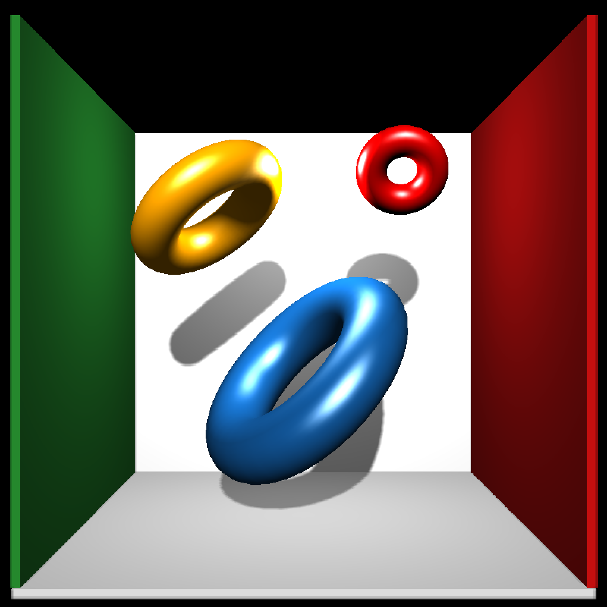

Torus 3D Model
torus_mesh( position = c(0, 0, 0), scale = c(1, 1, 1), angle = c(0, 0, 0), pivot_point = c(0, 0, 0), order_rotation = c(1, 2, 3), radius = 0.5, ring_radius = 0.2, sides = 36, rings = 36, material = material_list() )
| position | Default `c(0,0,0)`. Position of the mesh. |
|---|---|
| scale | Default `c(1,1,1)`. Scale of the mesh. Can also be a single numeric value scaling all axes uniformly. |
| angle | Default `c(0,0,0)`. Angle to rotate the mesh. |
| pivot_point | Default `c(0,0,0)`. Point around which to rotate the mesh. |
| order_rotation | Default `c(1,2,3)`. Order to rotate the axes. |
| radius | Default `0.5`. The radius of the torus. |
| ring_radius | Default `0.2`. The radius of the ring. |
| sides | Default `36`. The number of faces around the ring when triangulating the torus. |
| rings | Default `36`. The number of faces around the torus. |
| material | Default `material_list()` (default values). Specify the material of the object. |
List describing the mesh.
# \dontshow{ options("cores"=1) # } #Plot a group of tori in the cornell box # \donttest{ generate_cornell_mesh(ceiling = FALSE) %>% add_shape(torus_mesh(position=c(555/2,555/3,555/2), angle=c(20,0,45), radius=120, ring_radius = 40, material = material_list(diffuse="dodgerblue4",type="phong", ambient="dodgerblue4",ambient_intensity=0.2))) %>% add_shape(torus_mesh(position=c(400,400,555/2), angle=c(20,200,45),radius=80, ring_radius = 30, material=material_list(diffuse="orange",type="phong", ambient="orange",ambient_intensity=0.2))) %>% add_shape(torus_mesh(position=c(150,450,555/2), angle=c(60,180,0),radius=40, ring_radius = 20, material=material_list(diffuse="red",type="phong"))) %>% rasterize_scene(light_info = directional_light(c(0,1,-2)))#># }